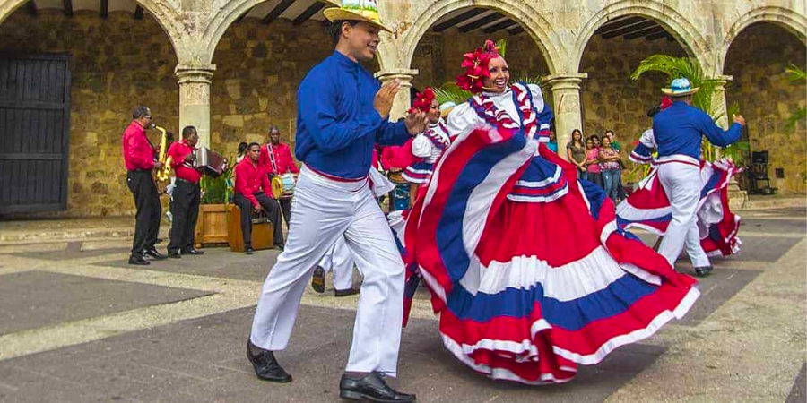

1 / 3
The Dominican Republic is one of the world's leading producers of cigars.
Cigars are often given as gifts to friends and family.
2 / 3
The Tamarindo tree is a symbol of strength and
resilience.
The tree is found throughout the Dominican Republic and is said to be able to withstand even the harshest conditions.
3 / 3

The merengue is the national dance of the Dominican Republic.
It is a lively and energetic dance that is often performed at parties and festivals.
The merengue is a symbol of Dominican culture and joy.
❮
❯